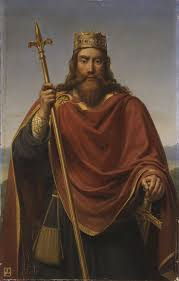
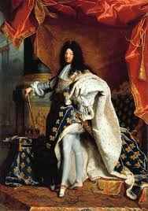
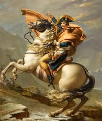
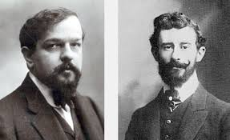
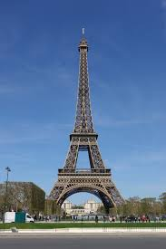
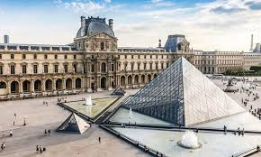
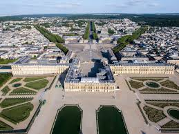

一个浪漫的国家
1. 法国不同地区有独特的食材和菜肴：
2. 法式烹饪风格:
3. 代表性美食:
4. 餐饮文化:
1. 古代与高卢时期
法国的早期居民为凯尔特人，被称为“高卢人”。公元前1世纪，罗马征服高卢，使其成为罗马帝国的一部分。罗马统治带来了城市建设、道路、法律以及拉丁文化的深远影响。
2. 中世纪时期
5世纪末，克洛维一世统一了高卢大部分地区，建立了法兰克王国。8世纪末至9世纪初，查理曼大帝扩展疆土，被加冕为“罗马人的皇帝”，推动基督教文化的传播。此时期，法国社会形成了典型的封建制度，王权与贵族权力相互交错，国家结构呈现出明显的等级分层。
3. 卡佩王朝与中世纪后期
987年，雨果·卡佩成为法国国王，开启了卡佩王朝，稳固了中央集权。1337年至1453年的百年战争期间，法国与英格兰为王位争夺发生长期战争，最终法国取得胜利，国家统一感增强，为之后的现代化奠定基础。
4. 文艺复兴与宗教战争
15至16世纪，意大利文艺复兴对法国产生了重要影响，推动了艺术、建筑和科学的发展。然而同时期，天主教与新教（胡格诺派）之间的宗教冲突频发，直到1598年亨利四世颁布《南特敕令》，保障新教徒的信仰自由。
5. 绝对主义时期
17世纪，路易十四强化中央集权，提出“太阳王”理念，并建造了辉煌的凡尔赛宫。这一时期，法国不仅在政治上实现了强大的中央集权，也成为欧洲文化和军事的重要中心，对外扩张与文化建设并行。
6. 法国大革命与拿破仑时期
1789年至1799年，法国爆发大革命，废除了君主制，提出“自由、平等、博爱”的口号，建立了第一共和国。随后，拿破仑通过政变掌权，建立法兰西第一帝国，改革法律，颁布《拿破仑法典》，并扩张欧洲版图，使法国一度成为欧洲霸主。
7. 19世纪：复辟与现代化
拿破仑倒台后，波旁王朝复辟，法国经历1830年和1848年的革命浪潮。拿破仑三世建立第二帝国（1852–1870），普法战争后，第三共和国成立，法国开始推动现代化建设，发展工业和基础设施。
8. 20世纪：战争与现代法国
法国在第一次世界大战（1914–1918）中是协约国的重要成员，战后国土受损严重。第二次世界大战期间，德国占领法国北部，戴高乐领导自由法国进行抵抗。战后，法国积极参与欧洲重建，是北约和欧洲经济共同体（后来的欧盟）的创始成员之一。
9. 当代法国
1958年，戴高乐建立第五共和国，强化总统权力，使国家制度更加稳定。现代法国在文化、科技、经济和国际事务上保持重要地位，同时面临社会多元化和全球化的挑战。
1. 建筑
法国建筑历史悠久，从中世纪的哥特式教堂到文艺复兴时期的宫殿，再到现代建筑都有代表作。哥特式建筑以巴黎圣母院为代表，高耸的尖塔、飞扶壁和彩色玻璃是其特色。文艺复兴和巴洛克建筑则强调对称、雕刻装饰和宏伟气势，如凡尔赛宫和卢浮宫的扩建部分。进入现代，法国建筑融合创新材料与新设计理念，如蓬皮杜中心和巴黎现代化市区建筑，体现了传统与现代的结合。
2. 音乐
法国音乐风格多样，既有古典音乐，也有民间与现代流行音乐。古典时期，法国作曲家如拉威尔和德彪西以印象派风格闻名，作品注重色彩与氛围。歌剧和芭蕾音乐在法国发展繁荣，如巴黎歌剧院演出传统歌剧和芭蕾。现代音乐方面，法国电子音乐和流行音乐也享有国际声誉，例如让-米歇尔·雅尔和大牌流行歌手在全球都有影响。法国音乐强调旋律优美与艺术表现力，并与文学和舞蹈紧密结合。
1. 埃菲尔铁塔（Eiffel Tower）
埃菲尔铁塔位于巴黎，是法国最具代表性的地标之一。建于1889年，为纪念法国大革命100周年而建。这座铁塔高达324米，是世界著名的观光景点，游客可以乘电梯或步行登塔，俯瞰巴黎全景，夜晚的灯光秀更是吸引无数游客。
2. 卢浮宫（Louvre Museum）
卢浮宫是世界著名的艺术博物馆，位于巴黎市中心，拥有超过38,000件艺术品。这里收藏了《蒙娜丽莎》《米洛的维纳斯》等世界珍宝。卢浮宫原为王宫，经过改建成为博物馆，建筑本身也是文艺复兴风格的经典代表，游客不仅能欣赏艺术品，也能感受历史建筑的魅力。
3. 凡尔赛宫（Palace of Versailles）
凡尔赛宫位于巴黎近郊，是法国古代王室的象征。建于17世纪，由路易十四扩建，宫殿与广阔的花园布局宏伟精美。宫内的镜厅、雕塑、喷泉和花园都体现了法国巴洛克建筑的辉煌与奢华，是了解法国历史与文化的重要景点。
法国位于欧洲西部，西临大西洋，北接比利时和卢森堡，东北与德国相邻，东邻瑞士和意大利，南界地中海，西南与西班牙接壤，同时通过英吉利海峡与英国相望。法国本土呈六边形，地形多样，包括平原、丘陵、山脉和河谷。境内主要河流有塞纳河、卢瓦尔河、多瑙河支流和罗讷河。法国的地理位置使其成为欧洲的重要交通枢纽和经济、文化中心，同时也拥有多样的气候和自然景观，从北部温带海洋性气候到南部地中海气候都有分布。